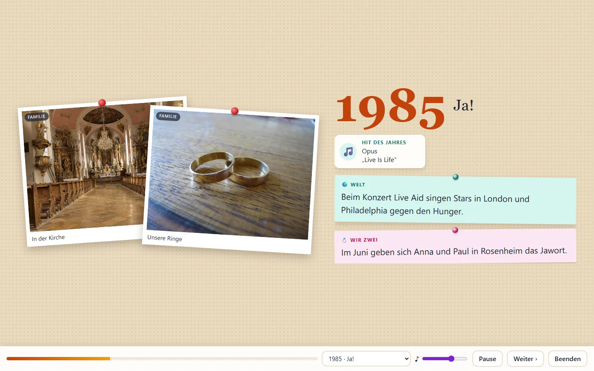
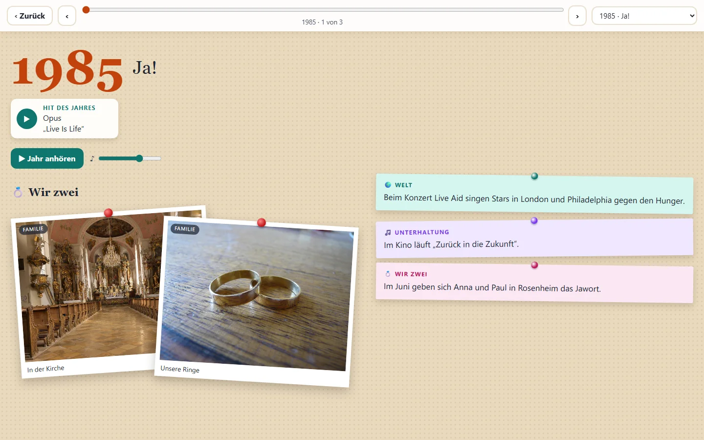
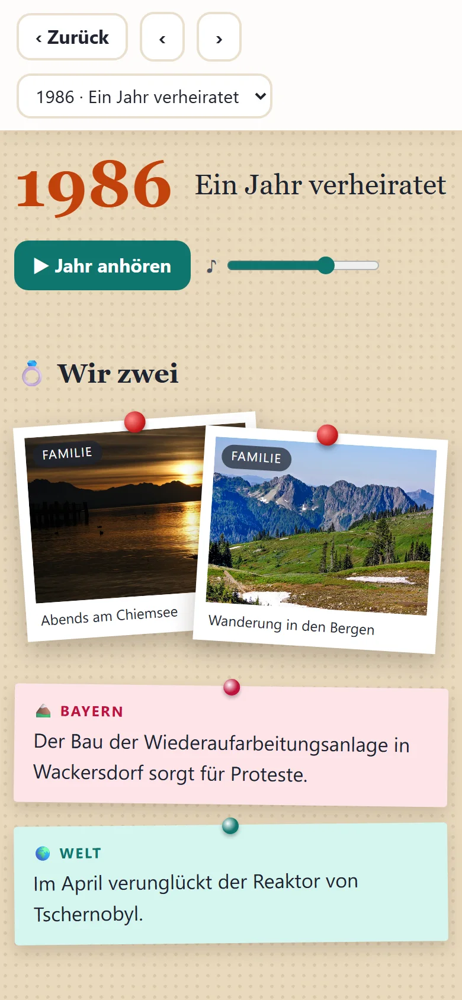
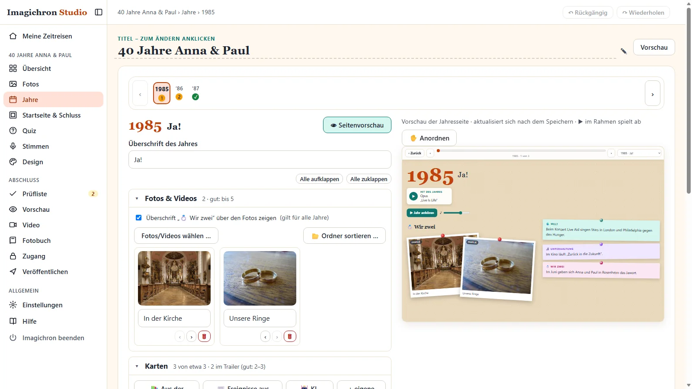
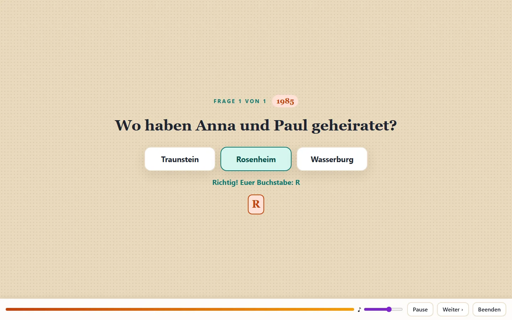

Zeitstrahl und Jahresseiten
Jedes Jahr hat eine eigene Seite: Familienfotos, Ereignisse aus Welt, Region, Sport und Musik, frei angeordnet wie auf einer Pinnwand.
Bilder-Zeitreisen für Familienfeste
Imagiter macht aus deinen Fotos und dem Zeitgeschehen jedes Jahres eine persönliche Zeitreise: mit Zeitstrahl, Trailer, Musik und Quiz. Für runde Geburtstage, Hochzeiten und Jubiläen.

So sieht es aus
Jedes Jahr wird zu einer Seite wie eine Pinnwand. Gestaltet wird sie im Studio auf deinem PC, ansehen kann man sie überall.




Alle Bilder zeigen eine erfundene Beispiel-Zeitreise. Die Fotos darin sind frei lizenzierte Aufnahmen aus Wikimedia Commons, siehe Bildnachweis.
Funktionen
Du sammelst Fotos und Erinnerungen, Imagiter ergänzt das Zeitgeschehen und macht daraus eine Webseite und ein Video.
Jedes Jahr hat eine eigene Seite: Familienfotos, Ereignisse aus Welt, Region, Sport und Musik, frei angeordnet wie auf einer Pinnwand.
Gäste beantworten Fragen. Die Anfangsbuchstaben der richtigen Antworten ergeben das Passwort.
Die fertige Zeitreise wird erst auf dem Gerät der Gäste entschlüsselt. Wer die Dateien speichert, kann nichts lesen.
Wer möchte, lässt sich Texte von einer KI vorschlagen. Fotos und Namen gehen nie mit, und alles bleibt bearbeitbar.
Den Link verschickst du an die Gäste. Fürs Fest gibt es dieselbe Zeitreise als Video für den Fernseher.
So geht’s
Zum Beispiel „40 Jahre verheiratet, 1985 bis 2025, Bayern“. Ein Assistent fragt nach Personen, Orten und Themen.
Eigene Fotos je Jahr dazu, Ereignisse aus der Jahres-Bibliothek, aus Wikipedia oder von einer KI. Du prüfst und ordnest alles.
Imagiter baut eine verschlüsselte Webseite, die du kostenlos ins Netz stellen kannst. Dazu ein Quiz als Zugang und auf Wunsch ein Video.
Datenschutz
Imagiter ist kein Online-Dienst. Das Programm läuft auf deinem Rechner, und du entscheidest, was dein Gerät verlässt.
Imagiter ist noch in Arbeit. Sobald die erste Version fertig ist, kannst du sie hier herunterladen.
Fragen
Nein. Das Programm läuft auf deinem PC. Die fertige Zeitreise ist eine Webseite aus einzelnen Dateien, die du bei kostenlosen Anbietern ins Netz stellen kannst.
Nein. Ereignisse kommen auch aus der eingebauten Jahres-Bibliothek und aus Wikipedia, oder du schreibst sie selbst. Die KI ist eine freiwillige Hilfe.
Einen Link. Nach dem Quiz (oder dem Passwort) sehen sie Zeitstrahl, Jahresseiten und Trailer, auf dem Handy wie am Computer.
Zu jedem Jahr kannst du den Hit des Jahres nennen. Er öffnet sich bei deinem Musikdienst, so bleibt alles im Rahmen der Regeln.